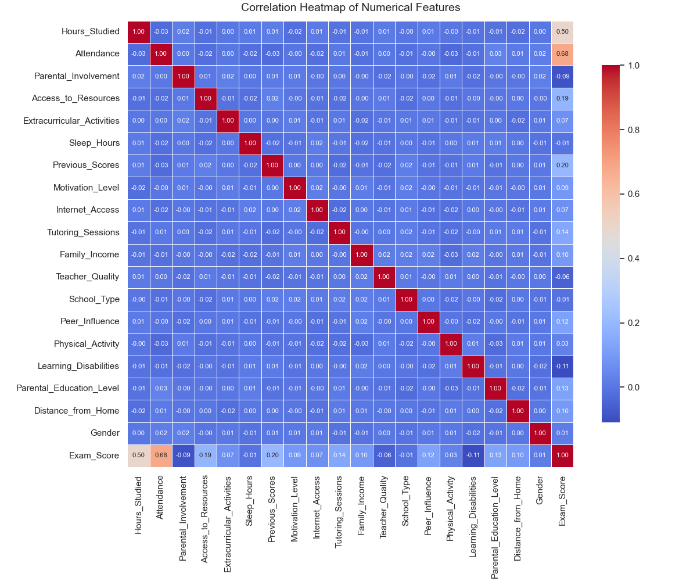

Academic Success: Hardwork or Destiny?
This project explores the complex and often overlooked balance between individual effort and uncontrollable background factors in shaping academic success. By analyzing a dataset of over 6,600 student records—including behavioral, demographic, and environmental variables—we aim to answer two key questions: How much of a student’s performance can be attributed to their own actions? And how much is shaped by factors beyond their control? Through both exploratory analysis and predictive modeling, we reveal the weight each variable carries and provide actionable insights for educators and students.
Correlation Heatmap

This heatmap illustrates the correlation between all features in the dataset, helping us identify the strength and direction of relationships among variables. It's visible that attendance and study time are most dominant factors affecting exam grade, followed by previous score and access to resources.
Controllable vs. Uncontrollable Factors

The bar chart visualizes the correlation of controllable features (like study habits) versus uncontrollable features (like family background). Red bars indicate uncontrollable features, while blue bars indicate controllable features. Interestingly, parental involvement comes out to be very interesting with the negative correlation it has.